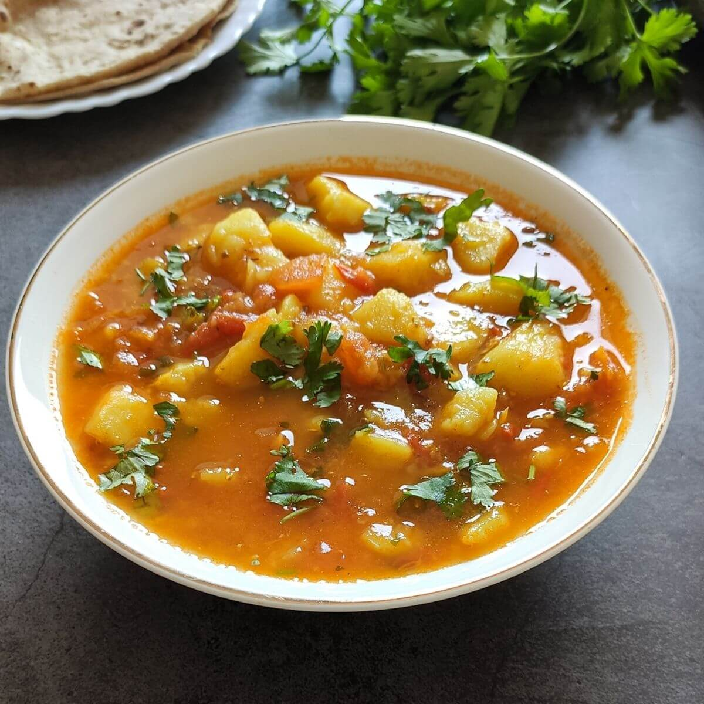

Aloo Curry

Description
This Potato curry is a simple flavorful curry made with sharp onions, tangy tomatoes, fresh herbs and fragrant spices. This is a quick and tasty one pot aloo curry. The recipe is also gluten-free and vegan.
Potato curry is one of those recipes that is full of memories for me. Growing up, my mom used to make this easy potato curry for all of us.
This is a one-pot curry. The potatoes are cooked in the sautéed onion-tomato base. So you see this cooking method saves time. (Source)
Ingredients
- Aloo
- Onions
- Tomatoes
- Cumin Seeds
- Ginger garlic paste
- Coriander Powder
- Garam Masala
- Red Chilli Powder
- Cocunut Milk
- Coriander Leaves
Steps
- Heat 2 tablespoons oil in a pan. Then add 1/2 teaspoon cumin seeds. These are optional and you may skip if you don't have.
- When the cumin seeds begin to splutter, add ¾ cup chopped onions (1 large) and 1 sprig curry leaves (optional). Saute until onions turn golden & lose their raw flavor.
- Next add 1 teaspoon ginger & garlic paste. (or 1 teaspoon finely chopped garlic). Saute until a nice aroma comes out from ginger garlic. This step takes about 1 to 2 minutes.
- Add 3/4th to 1 cup finely chopped tomatoes (3 medium) or pureed tomatoes. Sprinkle 1/2 teaspoon salt and 1/4 teaspoon turmeric. Saute until the tomatoes turn mushy. If the tomatoes are hard, cover the pan and cook for a while.
- Add 1 teaspoon coriander powder, ¾ to 1 teaspoon garam masala and ½ to ¾ teaspoon red chili powder.
- Mix well. Then saute everything until the onion tomato masala turns aromatic. This takes about 2 to 4 minutes. At this stage you can see oil begins to separate from the onion tomato masala. If you don't saute the masala well, the curry won't have a good flavor.
- Add chopped potatoes. Saute for 2 to 3 mins.
- Pour 1¼ cup water and give a good mix. [Tip: If using boiled potatoes, then you can use very little water (stock) in which you boiled them & cook just for 3 mins.] You can also cook the curry in light coconut milk or thin coconut milk.
- Cover and cook until potatoes become fork tender. Keep checking and add more water if needed as some kind of potatoes need more water.
- Optional: Since I did not have curry leaves or bay leaf, I added half teaspoon kasuri methi here. You may skip it.
- Taste test and add more salt if needed. When the potatoes are fully cooked they will soften. Check and turn off the stove. If the curry is runny, evaporate the excess liquid by cooking on a slightly higher flame. Add 2 tablespoons of chopped coriander leaves. (Source)